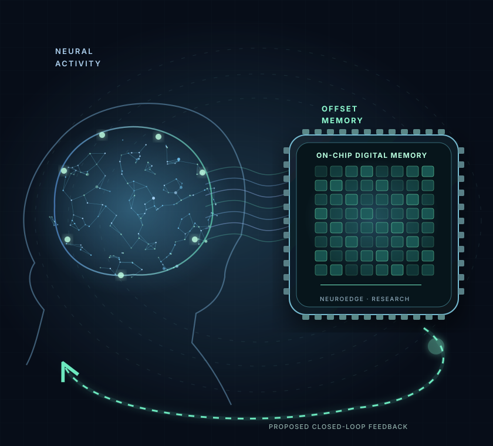
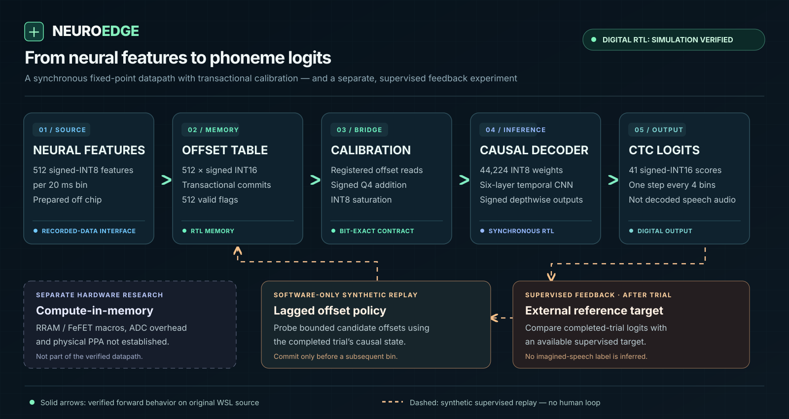

512 signed-INT16 offsets in Q4 units. Registered reads, saturating INT8 arithmetic and safe boundary commits.
REORGANIZED RTL VERIFIED IN WSL · RESEARCH PROTOTYPE
Neural features.
Integer inference.
Controlled updates.
A causal INT8 decoder with registered calibration reads, transactional INT16 offsets and exact Python/RTL numerical checks.
The reorganized feature-to-logit path passed its synthetic WSL simulation regression. A separate software-only replay tests delayed supervised feedback; no in-memory MAC or human closed-loop system is claimed.
Research prototype — not a clinical or commercially released device

512 FEATURES / 20 ms · RECORDED DATA
TRANSACTIONAL SRAM ↗ INT8 RTL
CONCEPTUAL VISUAL · NOT FABRICATED SILICON
00 / CLOSED-LOOP SYSTEM CONCEPT
VERIFIED FORWARD PATH · SYNTHETIC FEEDBACK REPLAY
Decode neural features.
Control updates safely.
The hardware implements a memory-calibrated feature-to-logit pipeline. A separately tested, strictly lagged software replay now exercises feedback-dependent commits using synthetic targets, not live user feedback.

44,224 INT8 weights; 41 signed INT16 phoneme logits. Source integration passed recorded-vector RTL simulation.
Offline replay now tests bounded supervised proposals. Live feedback efficacy and RRAM/FeFET compute-in-memory remain unverified.
FEATURE DIMENSIONS
512Precomputed features from 256 electrodes
MODEL WEIGHTS
44,224INT8 parameters in RTL memory
EQUIVALENCE TEST
328/328Exact 16-bit logit values
SIMULATED BIN LATENCY
3.608 ms*90,195 cycles at assumed 25 MHz
01 / THE PLATFORM
IMPLEMENTED DIGITAL SYSTEM
Defined modules.
Exact arithmetic.
The implemented pipeline accepts precomputed neural features. Hardware acquisition and neural feature extraction are outside this design.
NEUROEDGE / SYSTEM ARCHITECTURERTL PROTOTYPE
⌁
Feature stream
512 signed-INT8 features
per 20 ms bin
▦
Offset memory
512 × INT16 offset storage
atomic commits
◇
Feature calibration
Registered offset read
saturating INT8 addition
⊞
Causal inference
44,224 INT8 weights
41 phoneme-class logits
32 RECORDED FEATURE BINS TESTEDINTEGRATED OUTPUTS EXACTLY MATCH THE INTEGER REFERENCE
02 / EVIDENCE, NOT HYPE
EVALUATED ON RECORDED NEURAL FEATURES
Verified integer arithmetic.
Limited neural accuracy.
The integer reference and RTL agree on tested logits. The trained model’s phoneme error remains high; bit-exact arithmetic alone does not establish usable speech communication.
!
Research transparency
No fabricated die photo, PPA numbers, clinical accuracy or demonstrated adaptive-decoding improvement.
DECODER / VALIDATION AND DEVELOPMENTLOWER IS BETTER
The December session has already been used for development diagnostics and is not a pristine future holdout. PER is phoneme error rate.
03 / INTERACTIVE INTEGER DATAPATH
THE IMPLEMENTED NUMERICAL CONTRACT
Precise arithmetic.
Deliberate transactions.
Explore the exact signed-Q4 saturating addition performed before the neural decoder. Synthetic input values only; this is a deterministic engineering demonstration, not a prediction from neural data.
INPUT / Q4512 FEATURES · SIGNED INT8
Offsets are additive signed INT16 integers in the same Q4 units. Real commits are allowed only between complete 512-feature bins.
REGISTERED OFFSET READ → SATURATING ADD → DECODER
RAW · INT8+48
+OFFSET · INT16+32
=CALIBRATED · INT8+80
-1280+127
No saturation · exact integer addition
Simulated numeric example. Not an inference prediction, hardware power estimate, or adaptive-learning result.
04 / OFFLINE FEEDBACK REPLAY
DETERMINISTIC SUPERVISED TEST · SYNTHETIC DATA
A trial ends.
The next trial changes.
The code tests a bounded change to an INT16 offset after a completed trial's synthetic target is revealed. Nothing here uses patient speech, live electrodes, or in-memory MACs.
TRIAL 0 / 7TARGET DELAY ENFORCED
FIXED OFFSET · LOGIT L19
CONTROLLED OFFSET · LOGIT L19
ACTIVE OFFSET · Q40
Trial 0: no previous feedback available; no write.
05 / OPEN ENGINEERING RECORD
AUDITABLE SCIENCE
Results with
their limitations attached.
Evidence is tagged by provenance. Reported timing uses an assumed design clock; the RTL is not a silicon prototype.
Exact signed-INT16 logits on 32 bins. Historical WSL verification of the unmodified decoder.
Accepted writes verified in stand-alone RTL. Not optimizer updates or demonstrated adaptation benefit.
Recorded-vector integration passed in WSL, including safe writes, reset and output stalls. Renamed source also passed the synthetic full-integration regression in Ubuntu WSL (user-supplied log).
Four attempted-speech validation trials: frozen 59.48%, sham 60.34%, delayed supervised 59.48%. No supervised memory updates occurred; no adaptation gain demonstrated.
06 / ROAD TO HARDWARE
WHAT COMES NEXT
What remains
to be engineered.
Current scope is simulation and offline replay. The next gates are integrated host control, held-out neural evaluation, memory macro characterization and physical timing.
Verified forward RTL
Bit-exact inference, synchronous memory, monitored activity and controlled offset write transactions.
Offline feedback replay
Lagged supervised proposals execute against the real integer software decoder on synthetic data. A four-trial real-neural offline replay ran; the supervised policy made no writes or PER improvement. Hardware feedback control remains unimplemented.
Silicon and sensing
Map the logic to real cells, validate timing and energy, and develop an independent acquisition circuit.
07 / RESEARCH PARTNERSHIPS
ENGINEERING COLLABORATIONS
Validate the next
engineering boundary.
The source separates working decoder RTL from open questions in feedback control, neural generalization, analog acquisition and memory-centric ASIC design.
See the technical architecture ↗
Research collaboration inquiries: contact channel will appear after identity, privacy and inbox verification. No patient services or orders.